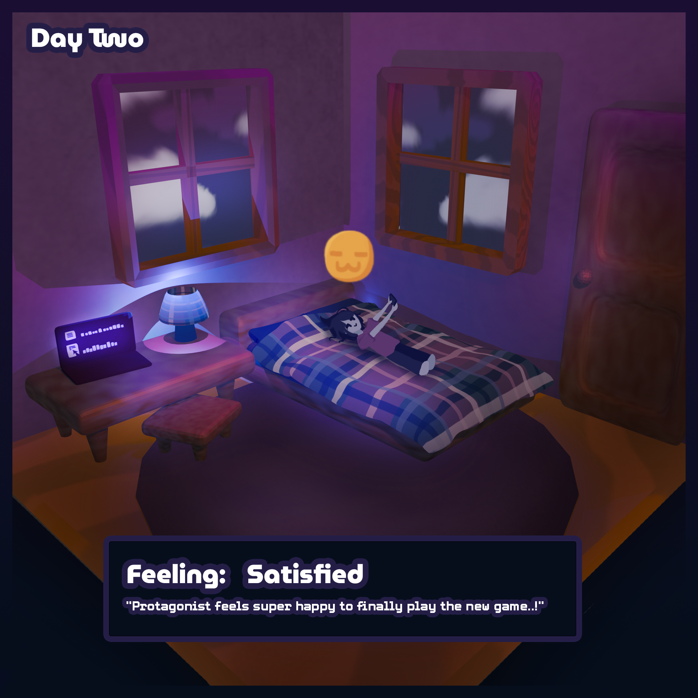

The protagonist is having so much fun playing the new game, and she has reached a new level! However, she is starting to feel a little
guilty about not spending time with her family or studying for her exams. She has one more full day to prepare for her midterms, but she
also wants to have fun playing the game while it's still new.
